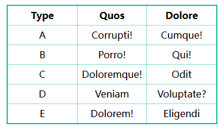
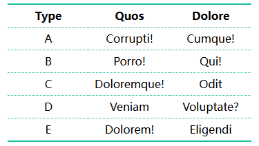
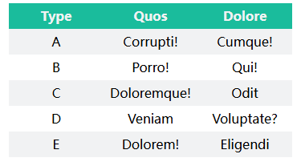

外边框粗实线
内部细点划线

. 首行和末行有边框
. 单独指定类实现；也可以使用 :has() 选择器实现

. 表头单独设置样式
. 其它奇数行、偶数行样式不同


border-spacing:
| Name | Gender | Age | |
|---|---|---|---|
| 桂林 | 漓江 | 象鼻山 | 大榕树 |
| 厦门 | 鼓浪屿 | ||
| 广州 | 小蛮腰 | 珠江 | |
| 海口 |
| 1 | 2 | 3 | 4 |
| 5 | 6 | 7 | 8 |
| 9 |
| bold | colspan="3" | ||
| rowspan="2" | bold | bold | bold |
| bold | |||
<table>
<tr>
<td>bold</td>
<td colspan="3">colspan="3"</td>
</tr>
<tr>
<td rowspan="2">rowspan="2"</td>
<td>bold</td>
<td>bold</td>
<td>bold</td>
</tr>
<tr>
<td>bold</td>
</tr>
</table>
table {
width: 100%;
border-collapse: collapse;
border: 4px double #888;
empty-cells: hide;//无效
}
table th, table td {
border: 1px solid #888;
}
| 1 | 2 | 3 | 4 |
| 1 | 2 | 3 | 4 |
| 1 | 2 | 3 | 4 |
| 1 | 2 | 3 | 4 |
.radius-tbl {
border-collapse: separate;
border-radius: 8px;
border: 1px solid #666;
}
.radius-tbl td {
border-bottom: 1px solid var(--main-color-green);
}
.radius-tbl tr:last-child td {
border: none;
}
. 为体现效果，以红色显示
| 1 | 2 | 3 | 4 |
| 1 | 2 | 3 | 4 |
| 1 | 2 | 3 | 4 |
| 1 | 2 | 3 | 4 |
.radius-tbl-self tbody tr:first-child td:first-child {
border-top-left-radius: 8px;
background-color: #f40;
}
.radius-tbl-self tbody tr:first-child td:last-child {
border-top-right-radius: 8px;
background-color: #f40;
}